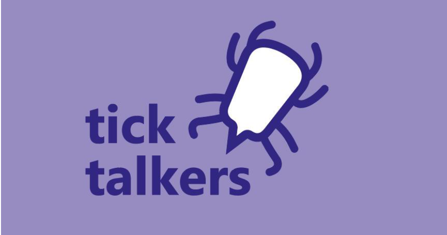
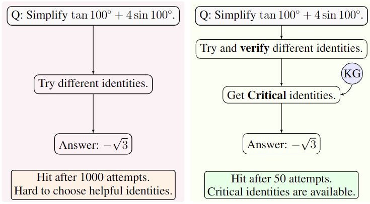
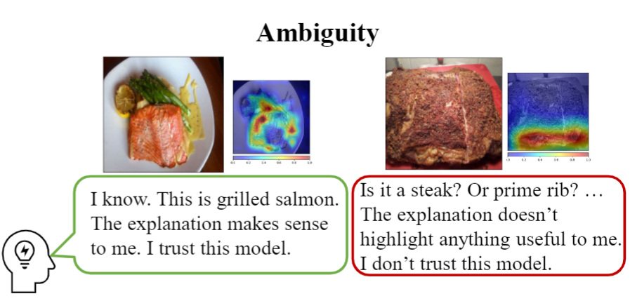
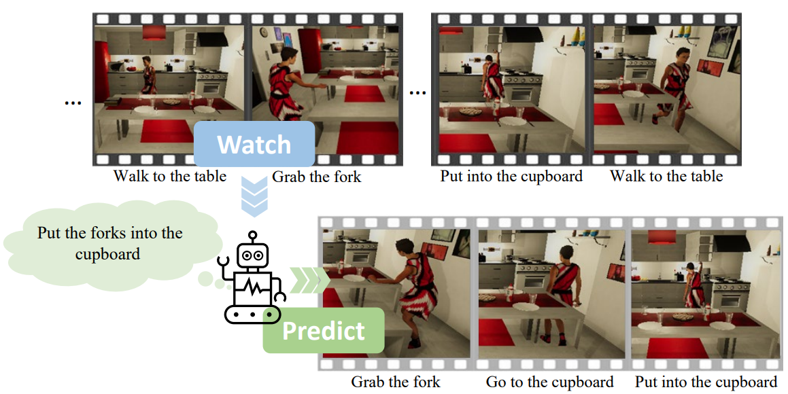

Current Projects
Leveraging AI to Predict and Explain Disease Incidence from Climate Data
Abstract:
This is a project with a great team Colim from TUM JA.
With the anticipated rise in temperatures due to climate change, organic vectors -- known as carriers of certain diseases -- may become more active in the coming years.
Therefore, it is necessary to forecast the breakout of these diseases based on historical climate data.
In this project, we aim to tackle this research challenge by designing a robust predictive model that can predict disease incidence.
Authors: Yao Rong, Franka Exner, Xufan Lu, Shaoming Zhang, Houlong Zhuang, Enkelejda Kasneci
Stepwise Self-Consistent Math Reasoning using LLMs
Abstract:
Using LLMs for complex mathematical reasoning is difficult, primarily due to the complexity of multi-step reasoning.
The main challenges of this process include (1) selecting critical intermediate results to advance the procedure, and (2) limited exploration of potential solutions.
To address these issues, we introduce a novel algorithm, namely Stepwise Self-Consistent Chain-of-Thought (SSC-CoT).
SSC-CoT employs a strategy of selecting intermediate steps based on the intersection of various reasoning chains.
Authors: Zilong Zhao, Yao Rong, Dongyang Guo, Emek Gözlüklü, Emir Gülboy, Enkelejda Kasneci
Unveiling Confounding Factors on User Trust in XAI
Abstract:
Confounding factors in user studies, like example order or model dimensionality, skew the relationship between trust and explanations.
In this work, we unveil two confounding factors introduced by the choice of examples in XAI user studies, which can significantly skew the impact of explanations on user trust.
We study (1) the ambiguity of examples to end-users, categorizing data instances as either ambiguous or unambiguous, and (2) the desirability of features used in explanations,
noting that certain features, like gender in hiring applications, might be undesirable.
Authors: Tobias Leemann*, Yao Rong*, Thai-trang Nguyen, Enkelejda Kasneci, Gjergji Kasneci
Gaze-Guided Graph Neural Network for Action Anticipation
Abstract:
In this work, we present a method for action anticipation
conditioned on recognized intention. We propose
Gaze-guided Action Anticipation, a graph neural network
(GNN)-based method that anticipates forthcoming actions
while considering the recognized intention behind them. Our method utilizes graphs to represent past actions from input
videos. Furthermore, we employ a reinforcement learning
algorithm and train an agent to act as a human observer
that watches the videos with the task of recognizing the underlying
intention.
Authors: Yao Rong, Süleyman Özdel, Berat Mert Albaba, Yen-Ling Kuo, Xi Wang, Enkelejda Kasneci